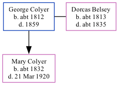

George Colyer c1812 - 1859
[ Home ] | [ Calendar ] | [ Surnames Index ] | [ Family History ]George Colyer, the 3 times great-grandfather of Nigel Horne, was born in Hackington, Kent, England c. 1812 and married Dorcas Belsey (with whom he had 1 child, Mary Ann, ) at Ss Cosmus & Damian, Blean, Kent, England on Mar 23, 18333.
He died in 1859 in Blean1,2 (jan/Feb/Mar) and was buried in Hackington on Mar 6, 18592.
Children
- Mary Ann was born c. 1832
Citations
- England & Wales, FreeBMD Death Index: 1837-1915 Online publication - Provo, UT, USA: The Generations Network, Inc., 2006.Original data - General Register Office. England and Wales Civil Registration Indexes. London, England: General Register Office. © Crown copyright. Published by permission of the Cont
- England, Select Deaths and Burials, 1538-1991 Ancestry.com Operations, Inc.
- Familysearch.org (www.familysearch.org)
Media
England Marriages 1538-1973 - R_848139422
Kent marriages and banns - GBPRS/CANT/M/97123292/1
Family Tree
Generated by ged2site. Last updated on Nov 13, 2024